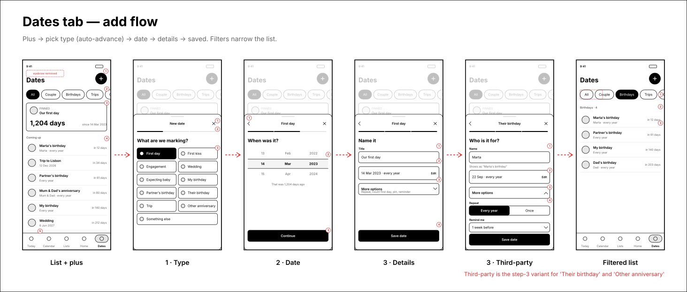
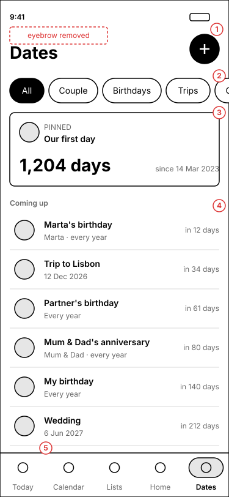
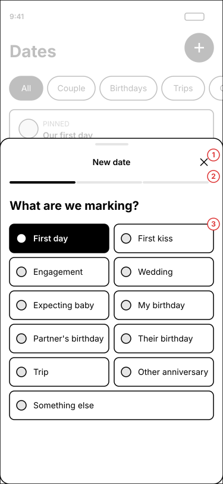
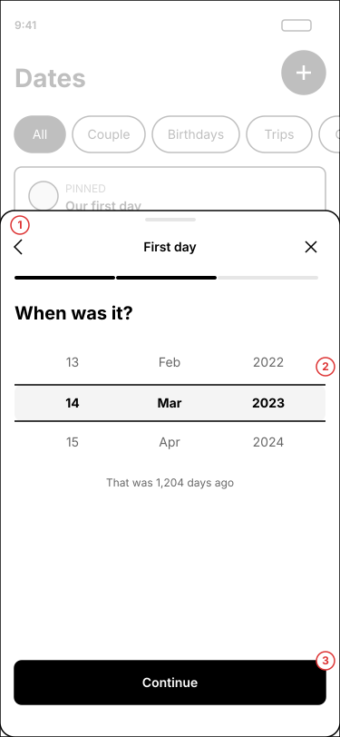
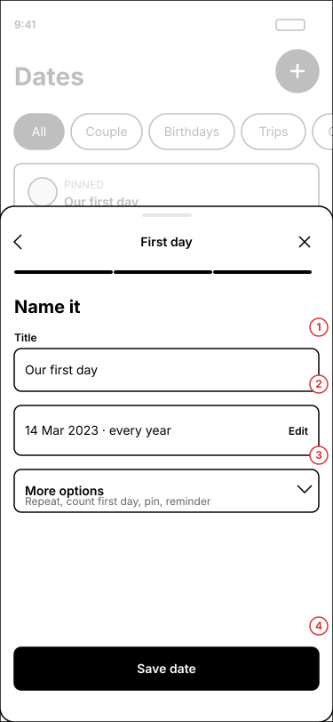
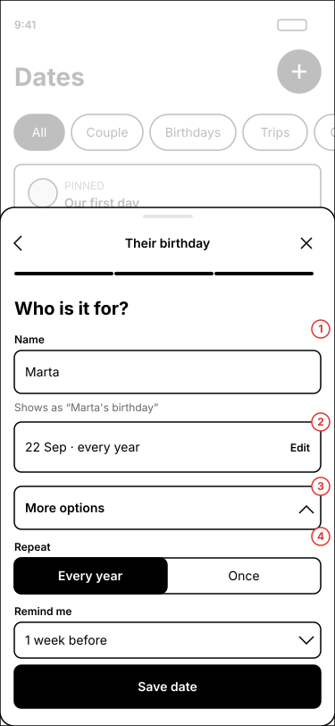
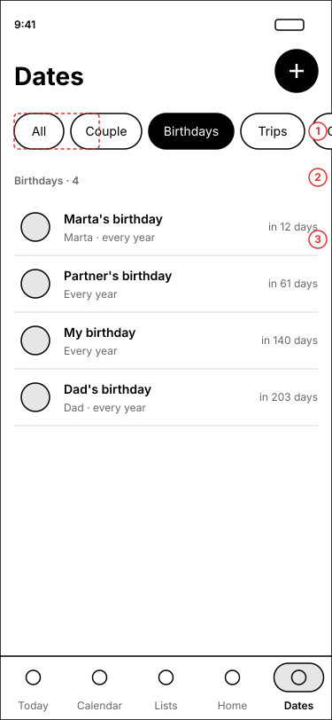

The Us tab becomes Dates. The eyebrow goes, a plus button opens a three-step bottom sheet, and chips filter the list. Third-party birthdays and anniversaries are new types.
6 screensLo-fi · monochromeMobile 375×812Tap any wireframe to zoom
Flow
Plus, pick a type (advances by itself), pick a date, name it and save. Third-party types swap the title field for a name field.

1 · Dates list
Same header pattern as Lists, with filter chips between the header and the content.

1Plus button in the header's right slot, the same shared component as Lists. The inline "Add a special day" row is removed. The "Us" eyebrow is gone.
2Filter chips scroll horizontally: All, Couple, Birthdays, Trips, Other. One chip active at a time.
3The pinned hero card stays, and shows only on All and Couple.
4Rows now show who the date is for. Third-party rows read "Marta · every year".
5Tab renamed "Dates" with a calendar-heart icon, matching the screen title.
2 · Wizard step 1: type
A bottom sheet over the dimmed list. Tapping a tile selects it and moves on after about 200ms.

1Close button. The back chevron appears from step 2.
2Three-segment progress bar. Completed steps fill in.
3Eleven type tiles, ordered couple, birthdays, then trip and other. The highlighted tile shows the instant before auto-advance.
Why: the type sets smart defaults (repeat, day count, pin), so the later steps need far fewer fields than today's single form.
3 · Wizard step 2: date
A date is not a single tap, so this step has an explicit Continue button.

1Back returns to the type step with the selection kept.
2Wheel picker with a live hint ("1,204 days ago") so mistakes are visible before saving.
3Continue is always enabled; the date defaults to today.
4 · Wizard step 3: details (couple type)
Title is prefilled from the type. Everything else uses defaults.

1Title field, prefilled ("Our first day") and editable.
2Summary of the date and repeat rule. Edit jumps back to step 2.
3"More options" is collapsed: repeat, count first day, pin, reminder.
4Save closes the sheet and the new row appears in the list.
5 · Wizard step 3: third-party type
"Their birthday" and "Other anniversary" ask who it is for and hide couple-only settings.

1Name field replaces Title. The title is derived: "Marta's birthday". This needs a new person-name column.
2Same summary row as the couple variant.
3More options, shown open.
4Only repeat and reminder appear. Count first day and Pin are hidden, so these never take the hero or the Today strip.
Calendar overlap: these dates appear in Calendar automatically through the unified agenda. Both partners see them, because the table is shared.
6 · Filtered list
Birthdays selected. The hero hides and the section label shows a count.

1Active chip, filled black.
2Count label: "Birthdays · 4".
3Mine, my partner's and other people's birthdays sit together, sorted by next occurrence.
Type and filter map
Types are a text column, so only the person name needs a migration.
Type
Filter
Defaults
First day, first kiss, engagement, wedding, expecting baby
Couple
Yearly, count first day for first day and first kiss, pin allowed
My birthday, partner's birthday
Birthdays
Yearly, no day count
Their birthday (new)
Birthdays
Yearly, needs name, no pin
Trip (new)
Trips
Once, single date
Other anniversary (new)
Other
Yearly, needs name, no pin
Something else
Other
Yearly
Open questions
1Should the Today "Us" strip show third-party dates, or only couple dates?
2Should the Google Birthdays calendar be de-duplicated against these dates?
3Does the Couple filter also hide third-party rows inside the pinned hero logic? (Assumed yes.)